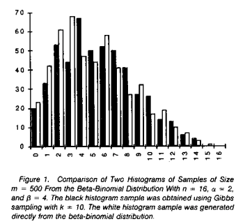

install.packages("VGAM")
library(VGAM)Plan
In this Designing a simulation activity, we would like to:
Present a possible simulation activity focused on Gibbs sampler (about 20 minutes)
Break into smaller working groups to brainstorm and collaborate on designing a simulation activity (about 60 minutes)
Come back to a large group sharing (about 45 minutes)
Simulation activity: Gibbs sampler of a beta-binomial
A classical early paper on Gibbs sampler is “Explaining the Gibbs Sampler” by Geroge Casella and Edward I. George, appeared in The American Statistician in 1992, soon after the Gibbs sampler and other Markov chain Monte Carlo (MCMC) techniques were proposed. It contains toy examples of how Gibbs sampler works with illustrative use cases through simulation. In this activity, we will introduce and practice replicating results in Example 1 from this paper.
This activity is adapted from Lab 3 of Vassar College’s MATH 347 Bayesian Statistics. If you are interested in using this paper to explore Gibbs sampler further in your course, consider this reading guide and adapt to your needs.
The background of a beta-binomial
A joint distribution of X and Y is given as
\begin{equation} f(x,y)\propto \binom{n}{x}y^{x+\alpha-1}(1-y)^{n-x+\beta-1},\; x=-1,\cdots ,n,\; 0\leq y\leq 1. \end{equation}
Suppose we are interested in calculating some characteristics of the marginal distribution f(x) of X.The Gibbs sampler allows us to generate a sample from this marginal. The full conditional posterior distribution of X and Y are given as
\begin{equation} x \mid y,n,\alpha,\beta \sim \textrm{Binomial}(n,y), \end{equation}
\begin{equation} y \mid x,n,\alpha,\beta\sim \text{Beta}(x+\alpha,n-x+\beta). \end{equation}
In addition, the marginal distribution of X can be obtained analytically, as
\begin{equation} f(x)=\binom{n}{x}\frac{\Gamma(\alpha+\beta)}{\Gamma(\alpha)\Gamma(\beta)}\frac{\Gamma(x+\alpha)\Gamma(n-x+\beta)}{\Gamma(\alpha+\beta+n)},x=0,1,\cdots,n, \end{equation} the Beta-Binomial distribution.
Simulate from the beta-binomial distribution
The VGAM R package can simulate draws from the beta-binomial distribution. Install this package and load the library.
To generate a random draw from X \sim \textrm{Beta-Binomial}(n,a,b):
rbetabinom.ab(1, n, a, b, .dontuse.prob = NULL)Simulate from a Gibbs sampler
Following the full conditional posterior distributions for x and y in Equations (2) and (3), one can design a Gibbs sampler to generate draws of x and y iteratively.
Results shown in Figure 1 from Casella and George (1992)
According to the paper, “Figure 1 displays histograms of two samples, x_1, \cdots, x_m of size m = 500 from the Beta-Binomial distribution with n = 16, \alpha = 2, and \beta = 4.”
```{r}
#| fig-cap: Figure 1 from Casella and George (1992).
#| out-width: 40%
knitr::include_graphics("img/PaperFigure1.png")
```
Step-by-step exercises to replicate results in Figure 1
- Use the
rbetabinom.ab()command to directly generate m draws of x, which follows a beta-binomial distribution as shown in Equation (4). Note that m = 500, n = 16, \alpha = 2, \beta = 4. Make a histogram of the m draws you have generated.
According to the caption of Figure 1, ``The black histogram sample was obtained using Gibbs sampling with k = 10.” Read Section 2 of the paper carefully to see how they implemented the Gibbs sampler.
According to the Gibbs sampler implementation described in the paper, how many Gibbs samplers/MCMC chains do we need to run?
Write a Gibbs sampling scheme to generate m draws of x. Note that m = 500,n = 16, \alpha = 2, \beta = 4 and k = 10. Make a histogram of the m draws you have generated.
Make a side-by-side histogram showing the two samples, one generated in Exercise 1, and the other generated in Exercise 3. (Hint: you can use the following R script to do a side-by-side histogram. The demo below assumes
BetaBinomialDrawsstoring the draws from Exercise 1 andBetaBinomialDrawsGibbsstoring the draws from Exercise 3.
install.packages("plotrix")
library(plotrix)
l <- list(BetaBinomialDraws, BetaBinomialDrawsGibbs)
multhist(l, breaks = seq(-0.5, 16.5, by = 1))Solutions to exercises
Below we include texts and/or R code (without outputs) as solutions to these exercises for your reference.
- R code solution below
library(VGAM)
set.seed(123)
m <- 500
n <- 16
a <- 2
b <- 4
BetaBinomialDraws <- rbetabinom.ab(m, n, a, b, .dontuse.prob=NULL)
hist(BetaBinomialDraws, breaks=30)Since the paper is simulating m = 500 short Gibbs sampler, we need to run m = 500 Gibbs sampler/MCMC chains.
R code solution below
set.seed(123)
k <- 10
BetaBinomialDrawsGibbs <- rep(NA, m)
for (i in 1:m){
y <- rbeta(1, 1, 1)
for (s in 1:k){
x <- rbinom(1, n, y)
y <- rbeta(1, x + a, n - x + b)
}
BetaBinomialDrawsGibbs[i] <- x
}
hist(BetaBinomialDrawsGibbs, breaks = 30)- R code solution below
install.packages("plotrix")
library(plotrix)
l <- list(BetaBinomialDraws, BetaBinomialDrawsGibbs)
multhist(l, breaks = seq(-0.5, 16.5, by = 1))Thoughts and ideas for creating this simulation activity
Casella and George (1992), whose Example 1 forms the basis of this simulation activity, is a well-regarded and accessible paper (some parts) for students. The paper can be used for a deeper dive of Gibbs sampler for a variety of audience.
Beta-binomial presents a new use case of Gibbs sampler. Students (should) already have some background knowledge of the beta-binomial conjugacy so they are familiar with the setup.
There exists an R function (
rbetabinom.ab()) to directly sample from the marginal beta-binomial distribution, thus we have a “true” posterior distribution to compare our Gibbs sampler results to.Casella and George (1992) Example 1 illustrates a less common approach to MCMC, i.e., running a large number of shorter MCMC chains, as opposed to running one or a few long MCMC chains. This approach is worth detailed discussion in class to illustrate various aspects of MCMC and MCMC diagnostics. Moreover, understanding the setup of Example 1 deepens students’ understanding of Gibbs sampler as well as sharpens their R coding skills.